# Wahrscheinlichkeitsraummodellformulierung
Omega = list() # Ergebnisrauminitialisierung
idx = 1 # Ergebnisindexinitialisierung
for(r in 1:6){ # Ergebnisse roter Würfel
for(b in 1:6){ # Ergebnisse blauer Würfel
Omega[[idx]] = c(r,b) # \omega \in \Omega
idx = idx + 1 }} # Ergebnisindexupdate
K = length(Omega) # Kardinalität von \Omega
pi = rep(1/K,1,K) # Wahrscheinlichkeitsfunktion \pi
# Durchgang des Zufallsvorgangs
omega = Omega[[which(rmultinom(1,1,pi) == 1)]] # Auswahl von \omega anhand \mathbb{P}({\omega})
# Realisierung der Zufallsvariable
xi_omega = sum(omega) # \xi(\omega)13 Zufallsvariablen
Mit dem Begriff der Zufallsvariable führen wir in diesem Kapitel das probabilistische Standardmodell für einen univariaten Datenpunkt ein. Zentral ist dabei die Möglichkeit, die Verteilungen von Zufallsvariablen mithilfe von Wahrscheinlichkeitsmassefunktion und Wahrscheinlichkeitsdichtefunktionen im Rahmen der probabilistischen Modellformulierung festzulegen. Weiterhin impliziert die Konstruktion von Zufallsvariablen als Abbildungen zufälliger Ergebnisse mit der Untersuchung der Verteilungen der so transformierten zufälligen Ergebnisse das Kernthema statistischer Inferenz.
13.1 Konstruktion, Definition und Intuition
Wir skizzieren zunächst die Konstruktion einer Zufallsvariable und ihrer Verteilung anhand von Abbildung 13.1. Dazu sei \((\Omega,\mathcal{A},\mathbb{P})\) ein Wahrscheinlichkeitsraum und \[\begin{equation} \xi : \Omega \to \mathcal{X}, \omega \mapsto \xi(\omega) \end{equation}\] eine Abbildung. Weiterhin sei \(\mathcal{S}\) eine \(\sigma\)-Algebra auf der Zielmenge \(\mathcal{X}\) dieser Abbildung. Für jedes \(S \in \mathcal{S}\) sei die Urbildmenge von \(S\) gegeben durch (vgl. Definition 4.2) \[\begin{equation} \xi^{-1}(S) := \{\omega \in \Omega|\xi(\omega) \in S\}. \end{equation}\] Wenn nun \(\xi^{-1}(S) \in \mathcal{A}\) für alle \(S \in \mathcal{S}\) gilt, dann nennt man die Abbildung \(\xi\) . Nehmen wir also an \(\xi\) sei messbar. Dann kann allen \(S \in \mathcal{S}\) die Wahrscheinlichkeit \[\begin{equation} \mathbb{P}_\xi : \mathcal{S} \to [0,1], S \mapsto \mathbb{P}_\xi(S) := \mathbb{P}\left(\xi^{-1}(S)\right) = \mathbb{P}\left(\{\omega \in \Omega|\xi(\omega) \in S\}\right) \end{equation}\] zugeordnet werden. In diesem Kontext nennt man \(\xi\) nun eine Zufallsvariable und \(\mathbb{P}_\xi\) heißt das Bildmaß oder die Verteilung von \(\xi\). Insgesamt wurde damit ausgehend von dem Wahrscheinlichkeitsraum \((\Omega,\mathcal{A},\mathbb{P})\) mithilfe der Zufallsvariable \(\xi\) der Wahrscheinlichkeitsraum \((\mathcal{X},\mathcal{S},\mathbb{P}_\xi)\) konstruiert. Formal ist eine Zufallsvariable damit wie folgt definiert.

Definition 13.1 (Zufallsvariable) Es sei \((\Omega, \mathcal{A}, \mathbb{P})\) ein Wahrscheinlichkeitsraum und \((\mathcal{X},\mathcal{S})\) ein . Dann ist eine definiert als eine Abbildung \(\xi:\Omega \to \mathcal{X}\) mit der \[\begin{equation} \{\omega \in \Omega|\xi(\omega) \in S \} \in \mathcal{A} \mbox{ für alle } S \in \mathcal{S}. \end{equation}\]
Nach Definition 13.1 sind Zufallsvariablen weder “zufällig” noch “Variablen”, sondern messbare Abbildungen. Fragt man nach der Bedeutung des Zufalls für die Werte \(\xi(\omega)\) von Zufallsvariablen, so vermittelt weiterhin die implizite Frequentistische Mechanik des Wahrscheinlichkeitsraums \((\Omega, \mathcal{A}, \mathbb{P})\) eine entsprechende Intuition: In jedem Durchgang des modellierten Zufallsvorgangs wird dabei ein \(\omega\) anhand von \(\mathbb{P}\) realisiert und dann (deterministisch) auf \(\xi(\omega)\) abgebildet. Wir definieren dementsprechend die Begriff des Ergebnisraums und der Realisierung einer Zufallsvariable.
Definition 13.2 (Realisierung einer Zufallsvariable) \((\Omega, \mathcal{A}, \mathbb{P})\) sei ein Wahrscheinlichkeitsraum, \((\mathcal{X},\mathcal{S})\) sei ein Messraum und \(\xi : \Omega \to \mathcal{X}\) sei eine Zufallsvariable. Dann heißt \(\mathcal{X}\) der Ergebnisraum der Zufallsvariable \(\xi\) und ein \(\xi(\omega) \in \mathcal{X}\) heißt eine Realisierung der Zufallvariable \(\xi\).
Beispiel
Aufbauend auf dem in Kapitel 11.3 betrachteten Beispiel eines Wahrscheinlichkeitsraums zur Modellierung des geichzeitigen Würfelns mit einem blauem und einem roten Würfel wollen wir mit der Summe der Würfelaugenzahlen ein erstes Beispiel für eine Zufallsvariable und ihre Verteilung betrachten. Wir haben in Kapitel 11.3 gesehen, dass ein sinnvolles Wahrscheinlichkeitsraummodell für das geichzeitige Würfeln mit einem blauem und einem roten Würfel durch \((\Omega,\mathcal{A}, \mathbb{P})\) mit
- \(\Omega := \{(r,b)| r \in \mathbb{N}_6, b \in \mathbb{N}_6\}\),
- \(\mathcal{A} := \mathcal{P}(\Omega)\) und
- \(\mathbb{P} : \mathcal{A} \to [0,1]\) mit \(\mathbb{P}(\{(r,b)\}) = 1/36\) für alle \((r,b) \in \Omega\).
gegeben ist. Die Auswertung der Summe der beiden Würfelaugenzahlen wird dann sinnvoller Weise durch die Abbildung \[\begin{equation} \xi : \Omega \to \mathcal{X}, (r,b) \mapsto \xi((r,b)) := r + b, \end{equation}\] beschrieben, wobei offenbar \(\mathcal{X} := \{2,3,...,12\}\) gelten muss. Der Ergebnisraum der Zufallsvariable ist also wiederrum endlich und \(\mathcal{S} := \mathcal{P}(\mathcal{X})\) ist eine sinnvolle \(\sigma\)-Algebra auf \(\mathcal{X}\). Mithilfe der \(\sigma\)-Addivität von \(\mathbb{P}\) können wir nun die Verteilung \(\mathbb{P}_\xi\) von \(\xi\) für alle Elementarereignisse \(\{x\} \in \mathcal{S}\) berechnen und damit insbesondere auch die Messbarkeit von \(\xi\) nachweisen, wie in untenstehender Tabelle gezeigt.
Die Wahrscheinlichkeiten der Elementarereignisse in \(\mathcal{S}\) wiederrum erlauben mithilfe des Begriffs der Wahrscheinlichkeitsmassefunktion (vgl. Kapitel 11.2) das Berechnen beliebiger Ereigniswahrscheinlichkeiten hinsichtlich der Würfelaugenzahlsumme. Insgesamt haben wir basierend auf \((\Omega, \mathcal{A}, \mathbb{P})\) und \(\xi\) also ein weiteres Wahrscheinlichkeitsraummodell \((\mathcal{X}, \mathcal{S}, \mathbb{P}_\xi)\) konstruiert.
Folgender R Code demonstriert, wie mithilfe der computerbasierten Erzeugung zufälliger Ergebnisse die Konstruktion des hier betrachteten Beispiels für einen Durchgang eines Zufallsvorgangs simuliert werden kann.
omega : 3 5
xi(omega) : 8Im Kontext des Vermessens zufällig ausgewählter experimenteller Einheiten dienen Zufallsvariablen oft als Modelle für Messvorgänge. Betrachten wie beispielsweise die Bestimmung des Wertes eines Intelligenztests an zufällig ausgewählten Proband:innen (Abbildung 13.2), so ergibt sich folgende Interpretation: Der Ergebnisraum des zugrundeliegenden Wahrscheinlichkeitsraums \((\Omega)\) soll die Gesamtheit aller in Frage kommender Proband:innen darstellen und die Auswahl einer Proband:in aus diesem Raum die Auswahl eines Ergebnisses \(\omega\), welche mit Wahrscheinlichkeit \(\mathbb{P}(\{\omega\})\) geschehen soll. Wird nun eine bestimmte Eigenschaft dieser Proband:in in idealisierter Weise gemessen, so handelt es sich dabei um eine deterministische Abbildung auf einen dieser Probandin zugeordneten Messwert \(\xi(\omega)\) im Raum der Messwerte \(\mathcal{X}\). Die Messwerte selbst unterliegen dann einer Wahrscheinlichkeitsverteilung, die durch die zugrundeliegende Verteilung und die Art des Messvorgangs bestimmt wird.

Notation
Die Konventionen zur Notation der mit Zufallsvariablen assoziierten Wahrscheinlichkeiten und Verteilungen sind etwas gewöhnungsbedürftig, so dass wir sie in folgender Definition festhalten wollen.
Definition 13.3 (Notation für Zufallsvariablen) Es seien \((\Omega,\mathcal{A},\mathbb{P})\) und \((\mathcal{X},\mathcal{S},\mathbb{P}_\xi)\) Wahrscheinlichkeitsräume und \(\xi : \Omega \to \mathcal{X}\) sei eine Zufallsvariable. Dann gelten mit \(S \in \mathcal{S}\) und \(x \in \mathcal{X}\) folgende Notationskonventionen für Ereignisse in \(\mathcal{A}\): \[\begin{align*} \begin{split} \{\xi \in S\} & := \{\omega \in \Omega|\xi(\omega) \in S\} \\ \{\xi = x\} & := \{\omega \in \Omega|\xi(\omega) = x\} \\ \{\xi \le x\} & := \{\omega \in \Omega|\xi(\omega) \le x\} \\ \{\xi < x\} & := \{\omega \in \Omega|\xi(\omega) < x\} \\ \{\xi \ge x\} & := \{\omega \in \Omega|\xi(\omega) \ge x\} \\ \{\xi > x\} & := \{\omega \in \Omega|\xi(\omega) > x\} \\ \end{split} \end{align*}\] Aus diesen Konventionen ergeben sich folgende Konventionen für Wahrscheinlichkeiten von Verteilungen \[\begin{align*} \begin{split} \mathbb{P}_\xi\left(\xi \in S\right) & = \mathbb{P}\left(\{\xi \in S\} \right) = \mathbb{P}\left( \{\omega \in \Omega|\xi(\omega) \in S\}\right) \\ \mathbb{P}_\xi\left(\xi = x \right) & = \mathbb{P}\left(\{\xi = x\} \right) = \mathbb{P}\left( \{\omega \in \Omega|\xi(\omega) = x\}\right) \\ \mathbb{P}_\xi\left(\xi \le x \right) & = \mathbb{P}\left(\{\xi \le x\} \right) = \mathbb{P}\left( \{\omega \in \Omega|\xi(\omega) \le x\}\right) \\ \mathbb{P}_\xi\left(\xi < x \right) & = \mathbb{P}\left(\{\xi < x\} \right) = \mathbb{P}\left( \{\omega \in \Omega|\xi(\omega) < x\}\right) \\ \mathbb{P}_\xi\left(\xi \ge x \right) & = \mathbb{P}\left(\{\xi \ge x\} \right) = \mathbb{P}\left(\{\omega \in \Omega|\xi(\omega) \ge x\}\right) \\ \mathbb{P}_\xi\left(\xi > x \right) & = \mathbb{P}\left(\{\xi < x\} \right) = \mathbb{P}\left( \{\omega \in \Omega|\xi(\omega) > x\} \right). \\ \end{split} \end{align*}\] Oft wird zudem auf das Subskript bei Verteilungssymbolen verzichtet und zum Beispiel \(\mathbb{P}_\xi\left(\xi \in S\right)\) nur als \(\mathbb{P}\left(\xi \in S\right)\) geschrieben, solange sich aus dem Kontext keine Verwechselungsmöglichkeit der beiden Wahrscheinlichkeitsmaße ergeben kann.
Wir wollen diesen Abschnitt mit einem technischem Theorem zum Rechnen mit Zufallsvariablen abschließen.
Theorem 13.1 (Arithmetik reeller Zufallsvariablen) \((\Omega, \mathcal{A}, \mathbb{P})\) sei ein Wahrscheinlichkeitsraum, \((\mathbb{R}, \mathcal{B}(\mathbb{R}))\) sei der reelle Messraum, \(\xi : \Omega \to \mathbb{R}\), \(\upsilon : \Omega \to \mathbb{R}\) seien reellwertige Zufallsvariablen und \(c \in \mathbb{R}\) sei eine Konstante. Weiterhin seien \[\begin{align} \begin{split} \xi + c & : \Omega \to \mathbb{R}, \omega \mapsto (\xi + c)(\omega)\, := \xi(\omega) + c \mbox{ für } c \in \mathbb{R} \\ c\xi & : \Omega \to \mathbb{R}, \omega \mapsto (c\xi)(\omega) \quad\,\,\, := c\xi(\omega) \mbox{ für } c \in \mathbb{R} \\ \xi + \upsilon & : \Omega \to \mathbb{R}, \omega \mapsto (\xi + \upsilon)(\omega) := \xi(\omega) + \upsilon(\omega) \\ \xi\upsilon & : \Omega \to \mathbb{R}, \omega \mapsto (\xi\upsilon)(\omega)\quad\,\,\, := \xi(\omega)\upsilon(\omega) \\ \end{split} \end{align}\] die Addition einer Konstante zu einer reellwertigen Zufallsvariable, die Multiplikation einer reellwertigen Zufallsvariable mit einer Konstante, die Addition zweier reellwertiger Zufallsvariablen und die Multiplikation zweier reellwertigen Zufallsvariablen, respektive. Dann sind auch \(\xi + c\), \(c\xi\), \(\xi + \upsilon\) und \(\xi\upsilon\) reellwertige Zufallsvariablen.
Für einen Beweis dieses Theorems verweisen wir auf die weiterführende Literatur, beispielsweise Hesse (2009). Intuitiv besagt Theorem 13.1, dass sowohl Addition einer zufälligen Größe zu einer konstanten Größe, als auch die Multiplikation einer zufälligen Größe mit einer Konstante, als auch die Addition zweier zufälliger Größen und schließlich auch die Multiplikation zweier zufälliger Größen immer wieder zufällige Größen mit ihren dann eigenen Verteilungen ergeben.
13.2 Wahrscheinlichkeitsmassefunktionen
In diesem Abschnitt führen wir mit den Wahrscheinlichkeitsmassefunktionen (WMFen) ein Hilfsmittel ein, um Verteilungen von Zufallsvariablen mit diskretem (genauer endlichem oder abzählbarem) Ergebnisraum zu definieren. Wir illustrieren den Begriff anhand dreier wichtiger Beispiele, den Bernoulli- und Binomialzufallsvariablen sowie den diskret-gleichverteilten Zufallsvariablen. Wir definieren zunächst den Begriff der WMF wie folgt.
Definition 13.4 (Diskrete Zufallsvariable und Wahrscheinlichkeitsmassefunktion) Eine Zufallsvariable \(\xi\) heißt , wenn ihr Ergebnisraum \(\mathcal{X}\) endlich oder abzählbar ist und eine Funktion der Form \[\begin{equation} p_\xi: \mathcal{X} \to \mathbb{R}_{\ge 0}, x \mapsto p_\xi(x) \end{equation}\] existiert, für die gilt
- \(\sum_{x \in \mathcal{X}} p_\xi(x) = 1\) und
- \(\mathbb{P}_\xi(\xi = x) = p_\xi(x)\) für alle \(x \in \mathcal{X}\).
Eine entsprechende Funktion \(p_\xi\) heißt von \(\xi\).
Wir erinnern daran, dass eine Menge abzählbar heißt, wenn sie bijektiv auf \(\mathbb{N}\) abgebildet werden kann. Im Deutschen nennt man WMFen auch Zähldichten. Im Englischen nennt man WMFen probability mass functions (PMFs), an diesem Begriff orientieren wir uns hier. Der notationellen Einfachheit halber verzichtet man wie bei den Bildmaßen auch bei WMFen meist auf das Subskript \(\xi\), schreibt also einfach \(p(x)\) anstelle von \(p_\xi(x)\), wenn aus dem Kontext klar ist, auf welche Zufallsvariable sich die WMF bezieht. Ohne Beweis halten wir fest, dass jede Funktion \(p : \mathcal{X} \to \mathbb{R}_{\ge 0}\), die die Normiertheiteigenschaft \(\sum_{x \in \mathcal{X}} p(x) = 1\) besitzt als WMF einer Zufallsvariable interpretiert werden kann.
Beispiele
Wir wollen mit den Bernoulli-Zufallsvariablen, den Binomial-Zufallsvariablen und den Diskrete-gleichverteilten Zufallsvariablen drei erste Beispiel für die Definition von Verteilungen mithilfe von WMFen betrachten.
Definition 13.5 (Bernoulli Zufallsvariable) Es sei \(\xi\) eine Zufallsvariable mit Ergebnisraum \(\mathcal{X} = \{0,1\}\) und WMF \[\begin{equation} p : \mathcal{X} \to [0,1], x\mapsto p(x) := \mu^{x}(1 - \mu)^{1-x} \mbox{ mit } \mu \in [0,1]. \end{equation}\] Dann sagen wir, dass \(\xi\) einer unterliegt und nennen \(\xi\) eine . Wir kürzen dies mit \(\xi \sim \mbox{Bern}(\mu)\) ab. Die WMF einer Bernoulli-Zufallsvariable bezeichnen wir mit \[\begin{equation} \mbox{Bern}(x;\mu) := \mu^x (1 - \mu)^{1 - x}. \end{equation}\]
Bernoulli-Zufallsvariablen können immer dann zur probabilistischen Modellierung genutzt werden, wenn das betrachtete Phänomen binär ist und die möglichen Werte der Zufallsvariable bijektiv auf \(\{0,1\}\) abgebildet werden können. Man beachte, dass die funktionale Form der Bernoulli-Zufallsvariable \(\mbox{Bern}(x;\mu)\) nur für \(x \in \{0,1\}\) Sinn ergibt und nicht etwa für \(x \in \{\mbox{Heads}, \mbox{Tails}\}\). Bildet man aber die möglichen Ergebnisse eines Münzwurfes auf \(\{0,1\}\) ab, also definiert etwa \(0 := \mbox{Heads}\) und \(1 := \mbox{Tails}\), so kann eine Bernoulli-Zufallsvariable durchaus als Modell eines Münzwurfs dienen.
Der Parameter \(\mu \in [0,1]\) einer Bernoulli-Zufallsvariable ist die Wahrscheinlichkeit dafür, dass die Zufallsvariable \(\xi\) den Wert 1 annimmt, dies erkennt man anhand von \[\begin{equation} \mathbb{P}(\xi = 1) = \mu^1 (1 -\mu)^{1-1} = \mu. \end{equation}\]
Wir visualisieren die WMFen von Bernoulli-Zufallsvariablen für \(\mu := 0.1, \mu := 0.5\) und \(\mu := 0.7\) in Abbildung 13.3.
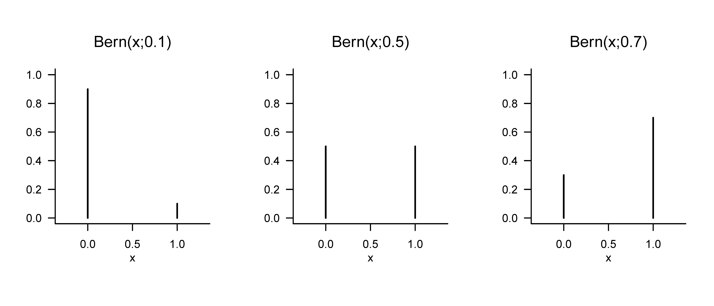
Definition 13.6 (Binomialzufallsvariable) Es sei \(\xi\) eine Zufallsvariable mit Ergebnisraum \(\mathcal{X} := \mathbb{N}_n^0\) und WMF \[\begin{equation} p : \mathcal{X} \to [0,1], x\mapsto p(x) := \begin{pmatrix} n \\ x \end{pmatrix} \mu^{x}(1 - \mu)^{n-x} \mbox{ für } \mu \in [0,1]. \end{equation}\] Dann sagen wir, dass \(\xi\) einer unterliegt und nennen \(\xi\) eine Binomial-Zufallsvariable. Wir kürzen dies mit \(\xi \sim \mbox{Bin}(\mu,n)\) ab. Die WMF einer Binomial-Zufallsvariable bezeichnen wir mit \[\begin{equation} \mbox{Bin}(x;\mu,n) := \begin{pmatrix} n \\ x \end{pmatrix} \mu^{x}(1 - \mu)^{n-x}. \end{equation}\]
Ohne Beweis halten wir fest, dass eine Binomial-Zufallsvariable als Modell der Summe von \(n\) unabhängig und identisch verteilten Bernoulli-Zufallsvariablen genutzt werden kann. Insbesondere gilt also \(\mbox{Bin}(x;\mu,1) = \mbox{Bern}(x;\mu)\). Binomial-Zufallsvariablen haben die Eigenschaft, dass mit \(n\) einer ihrer Parameter nicht nur die funktionale Form ihrer WMF, sondern auch ihren Ergebnisraum \(\mathcal{X}\) festlegt. Wir visualisieren die WMFen von Binomial-Zufallsvariablen für \((\mu,n) := (0.1,5), (\mu,n) := (0.5,10)\) und \((\mu,n) := (0.7,15)\) in Abbildung 13.4.
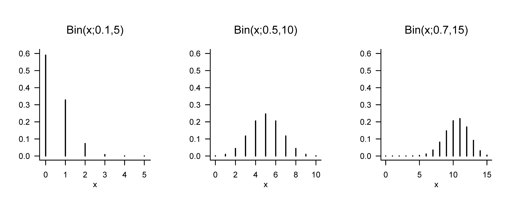
Definition 13.7 (Diskret-gleichverteilte Zufallsvariable) Es sei \(\xi\) eine diskrete Zufallsvariable mit endlichem Ergebnisraum \(\mathcal{X}\) und WMF \[\begin{equation} p : \mathcal{X} \to \mathbb{R}_{\ge 0}, x\mapsto p(x) := \frac{1}{|\mathcal{X}|}. \end{equation}\] Dann sagen wir, dass \(\xi\) einer unterliegt und nennen \(\xi\) eine . Wir kürzen dies mit \(\xi \sim U(|\mathcal{X}|)\) ab. Die WMF einer diskret-gleichverteilten Zufallsvariable bezeichnen wir mit \[\begin{equation} U(x;|\mathcal{X}|) := \frac{1}{|\mathcal{X}|}. \end{equation}\]
Diskrete-gleichverteilte Zufallsvariable können offenbar immer dann zur probabilistischen Modellierung genutzt werden, wenn die möglichen diskreten Ergebnisse des modellierten Phänomenens die gleiche Wahrscheinlichkeit haben. Im Fall der diskret-gleichverteilten Zufallsvariablen braucht es zur Definition ihrer funktionalen Form nach Festlegung des Ergebnisraums keinen weiteren Parameter. Offenbar gilt für \(\mathcal{X} := \{0,1\}\). \[\begin{equation} U(x;|\mathcal{X}|) = \mbox{Bern}(x;0.5) = \mbox{Bin}(x;1,0.5) \end{equation}\] Wir visualisieren die WMFen von diskret-gleichverteilten Zufallsvariablen für \(\mathcal{X} := \{\{0,1\}\, \mathcal{X} := \{-3,-2,-1,0,1\}\}\) und \(\mathcal{X} := \{-4,-3,-2,-1,0,1,2,3,4\}\) in Abbildung 13.5. Man beachte, dass Definition 13.7 formal die Sequentialität der Elemente von \(\mathcal{X}\) nicht erfordert, man kann also genauso eine diskret-gleichverteilte Zufallsvariable mit Ergebnisraum \(\mathcal{X} := \{1,5,7\}\) oder auch nicht numerischen Ergebnisraum \(\mathcal{X} := \{a,b,x,y\}\) definieren.
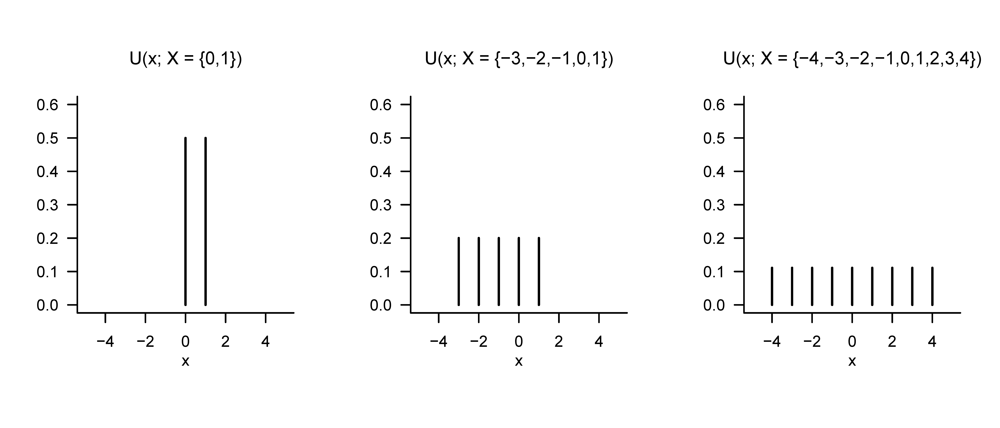
13.3 Wahrscheinlichkeitsdichtefunktionen
In diesem Abschnitt führen wir mit den Wahrscheinlichkeitsdichtefunktionen (WDFen) ein Hilfsmittel ein, um Verteilungen von Zufallsvariablen mit kontinuierlichem (genauer überabzählbarem) Ergebnisraum zu definieren. Wir illustrieren den Begriff zunächst an der grundlegendsten aller Zufallsvariablen, der normalverteilten Zufallsvariable. Mit der Gamma-Zufallsvariable, der Beta-Zufallsvariable und der diskret-gleichverteilten Zufallsvariable wollen wir dann noch drei Beispiele von Zufallsvariablen betrachten, die sowohl in der Modellformulierung der Frequentistischen als auch der Bayesianischen Inferenz an vielen Stellen eingesetzt werden. Wir definieren den Begriff der WDF wie folgt.
Definition 13.8 (Kontinuierliche Zufallsvariable und Wahrscheinlichkeitsdichtefunktion) Eine Zufallsvariable \(\xi\) heißt , wenn \(\mathbb{R}\) der Ergebnisraum von \(\xi\) ist und eine Funktion \[\begin{equation} p_\xi : \mathbb{R} \to \mathbb{R}_{\ge 0}, x \mapsto p_\xi(x) \end{equation}\] existiert, für die gilt
- \(\int_{-\infty}^{\infty} p_\xi(x)\,dx = 1\) und
- \(\mathbb{P}_\xi(\xi \in [a,b]) = \int_a^b p_\xi(x)\,dx\) für alle \(a,b\in\mathbb{R}\) mit \(a \le b\).
Eine entsprechende Funktion \(p_\xi\) heißt Wahrscheinlichkeitsdichtefunktion (WDF) von \(\xi\).
Im Englischen nennt man WDFen probability density functions (PDFs). Der notationellen Einfachheit halber verzichtet man wie bei den Bildmaßen und den WMFen auch bei WDFen meist auf das Subskript \(\xi\), schreibt also einfach \(p(x)\) anstelle von \(p_\xi(x)\), wenn aus dem Kontext klar ist, auf welche Zufallsvariable sich die WDF bezieht. Ohne Beweis halten wir fest, dass jede Funktion \(p : \mathbb{R} \to \mathbb{R}_{\ge 0}\), für deren uneigentliches Integral \(\int_{-\infty}^{\infty} p_\xi(x)\,dx = 1\) gilt, die also normiert ist, als WDF einer Zufallsvariable interpretiert werden kann.
Im Umgang mit WDFen und in Abgrenzung zu WMFen sollte man sich die Dichteeigenschaft einer WDF immer bewusst machen: Die Werte einer WDF stellen keine Wahrscheinlichkeiten, sondern Wahrscheinlichkeitsdichten dar, Wahrscheinlichkeiten werden aus WDFen durch Integration berechnet. Wie im physikalischen Sinn ergibt sich die einem reellen Intervall zugeordnete Wahrscheinlichkeit(smasse) also erst durch “Multiplikation” mit dem enstprechenden “Intervallvolumen”. Man denke hierzu auch an die Approximation des bestimmten Integrals \(\int_a^b p_\xi(x)\,dx\) durch einen Riemannschen Summenterm (vgl. Definition 7.3). Intuitiv gilt also \[\begin{equation}
\mbox{(Wahrscheinlichkeits)Masse} = \mbox{(Wahrscheinlichkeits)Dichte} \cdot \mbox{(Mengen)Volumen,}
\end{equation}\] wobei sich das Volumen im Sinne des Lebesgue-Maßes auf die Breite des Intervalls \([a,b]\) bezieht. Wie in der physikalischen Analogie ist die Wahrscheinlichkeitsmasse eines Intervalls ohne Volumen gleich Null,
\[\begin{equation}
\mathbb{P}_\xi(\xi = a) = \int_a^a p(x) \,dx = 0.
\end{equation}\] Ferner gilt, dass bei entsprechend kleinen Intervallen WDFen auch Werte größer als \(1\) annehmen können, auch wenn dies für die Wahrscheinlichkeit, die sich dann durch entsprechende Integration ergibt, nicht der Fall sein kann. Schließlich sei trotz dieser technischen Feinheiten folgende Intuition betont: Betrachtet man die graphische Darstellung der WDF einer Zufallsvariable und stellt sich eine Zerlegung von \(\mathbb{R}\) in gleich große Intervalle vor, so besitzt die Zufallsvariable natürlich eine höhere Wahrscheinlichkeit dafür, Werte in einem Intervall mit assoziierter höherer Wahrscheinlichkeitsdichte anzunehmen als Werte in einem Intervall mit assoziierter relativ niedrigerer Wahrscheinlichkeitsdichte.
Normalverteilte Zufallsvariablen
Mit der normalverteilten Zufallsvariable wollen wir als erstes Beispiel für die Definition einer kontinuierlichen Zufallsvariable mithile einer WDF nun die wichtigste Zufallsvariable der probabilistischen Modellbildung einführen.
Definition 13.9 (Normalverteilte Zufallsvariable) Es sei \(\xi\) eine Zufallsvariable mit Ergebnisraum \(\mathbb{R}\) und WDF \[\begin{equation} p : \mathbb{R} \to \mathbb{R}_{>0}, x\mapsto p(x) := \frac{1}{\sqrt{2\pi \sigma^2}}\exp\left(-\frac{1}{2\sigma^2}(x - \mu)^2\right). \end{equation}\] Dann sagen wir, dass \(\xi\) einer Normalverteilung mit Parametern \(\mu \in \mathbb{R}\) und \(\sigma^2 > 0\) unterliegt und nennen \(\xi\) eine normalverteilte Zufallsvariable. Wir kürzen dies mit \(\xi \sim N\left(\mu,\sigma^2\right)\) ab. Die WDF einer normalverteilten Zufallsvariable bezeichnen wir mit \[\begin{equation} N\left(x;\mu,\sigma^2\right) := \frac{1}{\sqrt{2\pi \sigma^2}}\exp\left(-\frac{1}{2\sigma^2}(x - \mu)^2\right). \end{equation}\] Eine normalverteilte Zufallsvariable mit \(\mu = 0\) und \(\sigma^2 = 1\) nennt man eine standardnormalverteilte Zufallsvariable
Wir visualisieren die WDFen von normalverteilten Zufallsvariablen für \((\mu,\sigma^2) := (0,1), (\mu,\sigma^2) := (-2.5, 10)\) und \((\mu,\sigma^2) := (3, 0.5)\) in Abbildung 13.6. Man macht sich an dieser Abbildung graphisch klar, dass die WDFen von normalverteilten Zufallsvariablen immer genau einen Werte höchster Wahrscheinlichkeitsdichte haben und zwar an der Stelle des Parameters \(\mu \in \mathbb{R}\). Dies ergibt sich durch die Tatsache, dass das Argument der Exponentialfunktion in der funktionalen Form von \(N(x;\mu,\sigma^2)\) aufgrund des negativen Vorzeichens des Quadrates von \(x-\mu\) und der Positivität von \(\sigma^2\) immer nicht-positiv ist und die Exponentialfunktion auf den nicht-positiven reellen Zahlen ihr Maximum bei \(x = \mu\), also \(x-\mu = 0\) annimmt. Weiterhin macht man sich graphisch klar, dass der Parameter \(\sigma^2>0\) die Breite der WDF einer normalverteilten Zufallsvariable enkodiert.
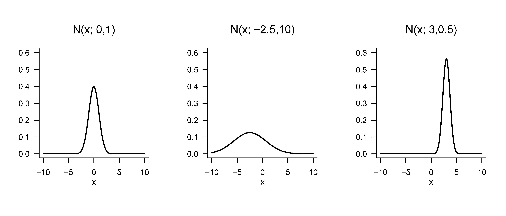
Weitere Beispiele
Wir wollen mit den Gamma-Zufallsvariablen, den Beta-Zufallsvariablen und den gleichverteilten Zufallsvariablen drei weitere Beispiele für die Definition von Verteilungen mithilfe von WDFen betrachten.
Definition 13.10 (Gamma-Zufallsvariable) Es sei \(\xi\) eine Zufallsvariable mit Ergebnisraum \(\mathcal{X} := \mathbb{R}_{>0}\) und WDF \[\begin{equation} p : \mathbb{R}_{>0} \to \mathbb{R}_{>0}, x \mapsto p(x) := \frac{1}{\Gamma(\alpha)\beta^{\alpha}}x^{\alpha-1}\exp\left(-\frac{x}{\beta}\right), \end{equation}\] wobei \(\Gamma\) die Gammafunktion bezeichne. Dann sagen wir, dass \(\xi\) einer Gammaverteilung mit Formparameter \(\alpha >0\) und Skalenparameter \(\beta > 0\) unterliegt und nennen \(\xi\) eine gammaverteilte Zufallsvariable. Wir kürzen dies mit \(\xi \sim G(\alpha,\beta)\) ab. Die WDF einer gammaverteilen Zufallsvariable bezeichnen wir mit \[\begin{equation} G(x;\alpha,\beta) := \frac{1}{\Gamma(\alpha)\beta^{\alpha}}x^{\alpha-1}\exp\left(-\frac{x}{\beta}\right). \end{equation}\]
Die spezielle Gamma-Zufallsvariable mit WDF \(G\left(x;\frac{n}{2},2\right)\) wird Chi-Quadrat (\(\chi^2\)) Verteilung mit \(n\) Freiheitsgraden genannt. Wir visualisieren die WDFen von Gamma-Zufallsvariablen für \((\alpha,\beta) := (1,1),(\alpha,\beta) := (2,2)\) und \((\alpha,\beta) := (5,1)\) in Abbildung 13.7.
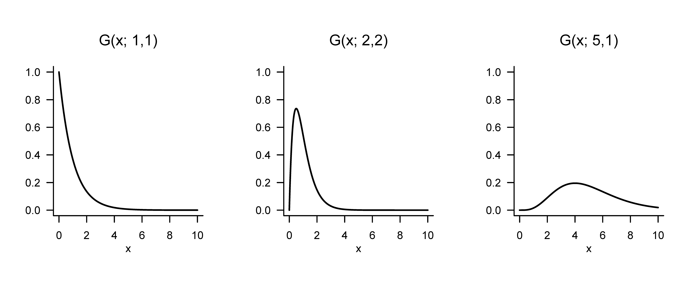
Definition 13.11 (Beta-Zufallvariable) Es sei \(\xi\) eine Zufallsvariable mit Ergebnisraum \(\mathcal{X} := [0,1]\) und WDF \[\begin{equation} p : \mathcal{X} \to [0,1], x \mapsto p(x) := \frac{\Gamma(\alpha + \beta)}{\Gamma(\alpha)\Gamma(\beta)} x^{\alpha-1}(1-x)^{\beta-1} \mbox{ mit } \alpha,\beta \in \mathbb{R}_{>0}, \end{equation}\] wobei \(\Gamma\) die Gammafunktion bezeichne. Dann sagen wir, dass \(\xi\) einer mit Parametern \(\alpha >0\) und \(\beta>0\) unterliegt, und nennen \(\xi\) eine Beta-verteilte Zufallsvariable. Wir kürzen dies mit \(\xi \sim \mbox{Beta}(\alpha,\beta)\) ab. Die WDF einer Beta-verteilten Zufallsvariable bezeichnen wir mit \[\begin{equation} \mbox{Beta}(x;\alpha,\beta) := \frac{\Gamma(\alpha + \beta)}{\Gamma(\alpha)\Gamma(\beta)} x^{\alpha-1}(1-x)^{\beta-1}. \end{equation}\]
Dadurch, dass der Ergebnisraum einer Beta-Zufallsvariable auf das Intervall \(\mathcal{X} := [0,1]\) (für \(\alpha < 1, \beta < 1\) genauer \(\mathcal{X} := ]0,1[\)) beschränkt ist, bietet sich eine Beta-Zufallsvariable unter anderem dafür an, Wahrscheinlichkeiten von Wahrscheinlichkeiten (also Werten zwischen 0 und 1) zu beschreiben. Wir visualisieren die WDFen von Beta-Zufallsvariablen für \((\alpha,\beta) := (1,1), (\alpha,\beta) := (3,2)\) und \((\alpha,\beta) := (10,5)\) in Abbildung 13.8.
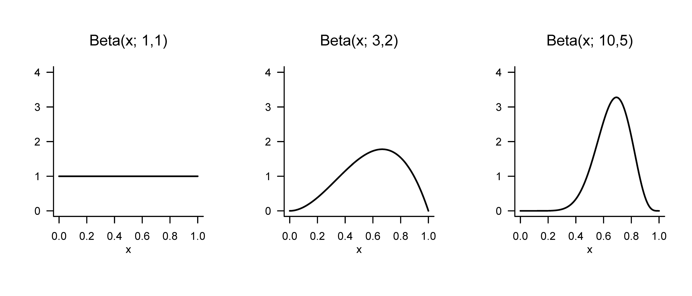
Mit den gleichverteilten Zufallsvariablen betrachten wir abschließend noch das Analogon zu diskret-gleichverteilten Zufallsvariablen für den Fall kontinuierlicher Zufallsvariablen.
Definition 13.12 (Gleichverteilte Zufallsvariable) Es sei \(\xi\) eine kontinuierliche Zufallsvariable mit Ergebnisraum \(\mathbb{R}\) und WDF \[\begin{equation} p : \mathbb{R} \to \mathbb{R}_{\ge 0}, x\mapsto p(x) := \begin{cases} \frac{1}{b - a} & x \in [a,b] \\ 0 & x \notin [a,b] \end{cases}. \end{equation}\] Dann sagen wir, dass \(\xi\) einer Gleichverteilung mit Parametern \(a\) und \(b\) unterliegt und nennen \(\xi\) eine gleichverteilte Zufallsvariable. Wir kürzen dies mit \(\xi \sim U(a,b)\) ab. Die WDF einer gleichverteilten Zufallsvariable bezeichnen wir mit \[\begin{equation} U(x;a,b) := \frac{1}{b - a}. \end{equation}\]
Wir visualisieren die WDFen von gleichverteilten Zufallsvariablen für \((a,b) := (0,1), (a,b) := (-3,1)\) und \((a,b) := (-4,4)\) in Abbildung 13.9.
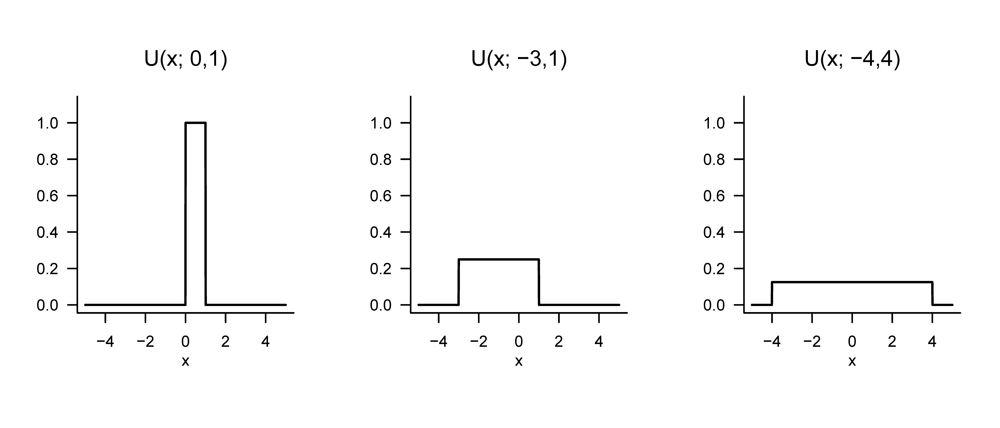
13.4 Kumulative Verteilungsfunktionen
Im letzten Abschnitt dieses Kapitels wollen wir mit den kumulativen Verteilungsfunktionen (KVFen) eine weitere Möglichkeit einführen, die Verteilungen von diskreten oder kontinuierlichen Zufallsvariablen festzulegen. Es ist allgemein allerdings eher üblich, dies mithilfe von WMFen oder WDFen zu tun. Trotzdem sind KVFen an vielen Stellen nützlich, da sie sowohl für diskrete als nauch kontinuierliche Zufallsvariablen einen direkten Zusammenhang zwischen Werten der Zufallsvariable und bestimmten Wahrscheinlichkeiten herstellen, der in der Anwendung ohne Summation oder Integration auskommt. Wir betrachten zunächst die allgemeine Definition von KVFen für sowohl diskrete als auch kontinuierliche Zufallsvariablen und wenden uns dann den KVFen von diskreten und den KVFen von kontiniuerlichen Zufallsvariablen im einzelnen zu. Für eine beliebige Zufallsvariable definieren wir den Begriff der KVF wie folgt.
Definition 13.13 (Kumulative Verteilungsfunktion) Die kumulative Verteilungsfunktion (KVF) einer Zufallsvariable \(\xi\) ist definiert als \[\begin{equation} P_\xi : \mathbb{R} \to [0,1], x \mapsto P_\xi(x) := \mathbb{P}_\xi(\xi \le x). \end{equation}\]
Man beachte, dass \(P_\xi(x)\) ist für jedes \(x \in \mathbb{R}\) definiert ist, auch wenn für ein gegebenes \(x\in \mathbb{R}\) gilt, dass \(x \notin \mathcal{X}\). Wie bereits für Wahrscheinlichkeitsverteilungen, WMFen und WDFen gesehen verzichtet man meist auf das Subskript \(_\xi\), wenn aus dem Kontext klar ist, auf welche Zufallsvariable sich eine gegebene KVF bezieht. Mithilfe von KVFen können zum Beispiel Überschreitungswahrscheinlichkeiten und Intervallwahrscheinlichkeiten von Zufallsvariablen direkt ausgewertet werden. Dies ist der Inhalt folgender Theoreme.
Theorem 13.2 (Überschreitungswahrscheinlichkeit) Es sei \(\xi\) eine Zufallsvariable mit Ergebnisraum \(\mathcal{X}\) und \(P\) ihre kumulative Verteilungsfunktion. Dann gilt für die Überschreitungswahrscheinlichkeit \(\mathbb{P}(\xi > x)\), dass \[\begin{equation} \mathbb{P}(\xi > x) = 1 - P(x) \mbox{ für alle } x \in \mathcal{X}. \end{equation}\]
Beweis. Die Ereignisse \(\{\xi > x\}\) und \(\{\xi \le x\}\) sind disjunkt und \[\begin{equation} \Omega = \{\omega\in \Omega| \xi(\omega) > x\} \cup \{\omega\in \Omega|\xi(\omega) \le x\} = \{\xi > x\} \cup \{\xi \le x\}. \end{equation}\] Mit der \(\sigma\)-Additivität von \(\mathbb{P}\) folgt dann \[\begin{align} \begin{split} \mathbb{P}(\Omega) & = 1 \\ \Leftrightarrow \mathbb{P}( \{\xi > x\} \cup \{\xi \le x\}) & = 1 \\ \Leftrightarrow \mathbb{P}(\{\xi > x\}) + \mathbb{P}(\{\xi \le x\}) & = 1 \\ \Leftrightarrow \mathbb{P}(\{\xi > x\}) & = 1 - \mathbb{P}(\{\xi \le x\}) \\ \Leftrightarrow \mathbb{P}(\{\xi > x\}) & = 1 - P(x). \end{split} \end{align}\]
Theorem 13.3 (Intervallwahrscheinlichkeiten) Es sei \(\xi\) eine Zufallsvariable mit Ereignisraum \(\mathcal{X}\) und \(P\) ihre KVF. Dann gilt für die Intervallwahrscheinlichkeit \(\mathbb{P}(\xi \in \,]x_1,x_2])\), dass \[\begin{equation} \mathbb{P}(\xi \in \, ]x_1,x_2]) = P(x_2) - P(x_1) \mbox{ für alle } x_1,x_2 \in \mathcal{X} \mbox{ mit } x_1 < x_2. \end{equation}\]
Beweis. Wir betrachten die Ereignisse \(\{\xi \le x_1\}\),\(\{x_1 < \xi \le x_2\}\) und \(\{\xi \le x_2\}\), wobei \[\begin{equation} \{\xi \le x_1\} \cap \{x_1 < \xi \le x_2\} = \emptyset \mbox{ und } \{\xi \le x_1\} \cup \{x_1 < \xi \le x_2\} = \{\xi \le x_2\}. \end{equation}\] gelten. Mit der \(\sigma\)-Additivität von \(\mathbb{P}\) gilt dann \[\begin{align} \begin{split} \mathbb{P}(\{\xi \le x_1\} \cup \{x_1 < \xi \le x_2\}) & = \mathbb{P}(\{\xi \le x_2\}) \\ \Leftrightarrow \mathbb{P}(\{\xi \le x_1\}) + \mathbb{P}(\{x_1 < \xi \le x_2\}) & = \mathbb{P}(\{\xi \le x_2\}) \\ \Leftrightarrow \mathbb{P}(\{x_1 < \xi \le x_2\}) & = \mathbb{P}(\{\xi \le x_2\}) - \mathbb{P}(\{\xi \le x_1\}) \\ \Leftrightarrow \mathbb{P}(\{x_1 < \xi \le x_2\}) & = P(x_2) - P(x_1) \\ \Leftrightarrow \mathbb{P}(\xi \in \,]x_1,x_2]) & = P(x_2) - P(x_1). \end{split} \end{align}\]
Folgendes Theorem gibt drei zentrale Eigenschaften von KVFen an. Dabei besagt die dritte Eigenschaft, dass eine KVF keine Sprünge hat, wenn man sich Grenzpunkten von rechts nähert. Tatsächlich sind die diskutierten Eigenschaften auch gerade die definierenden Eigenschaften von KVFen, das heißt, jede Funktion \(P\), die die Eigenschaften von Theorem 13.4 erfüllt, kann als eine KVF einer Zufallsvariable interpretiert werden. Für einen Beweis dieser Tatsache verweisen wir auf die weiterführende Literatur.
Theorem 13.4 (Eigenschaften von kumulative Verteilungsfunktionen) Es sei \(\xi\) eine Zufallsvariable und \(P\) ihre kumulative Verteilungsfunktion. Dann hat \(P\) die folgenden Eigenschaften
- \(P\) ist monoton steigend, i.e., wenn \(x_1 < x_2\), dann gilt \(P(x_1)\le P(x_2)\).
- \(\lim_{x \to -\infty} P(x) = 0\) und \(\lim_{x \to \infty} P(x) = 1\).
- \(P\) ist rechtsseitig stetig, d.h., \(P(x) = P\left(x^+\right) = \lim_{y \to x, y > x} P(y)\) für alle \(x \in \mathbb{R}\)
Beweis. Wir betrachten die Eigenschaften nacheinander.
Wir halten zunächst fest, dass für Ereignisse \(A \subset B\) gilt, dass \(\mathbb{P}(A)\le \mathbb{P}(B)\). Wir halten dann fest, dass für \(x_1 < x_2\), \[\begin{equation} \{\xi \le x_1\} = \{\omega \in \Omega|\xi(\omega)\le x_1\} \subset \{\omega \in \Omega|\xi(\omega)\le x_2\} = \{\xi \le x_2\}. \end{equation}\] Also gilt \[\begin{equation} \mathbb{P}(\{\xi \le x_1\}) \le \mathbb{P}\{\xi \le x_2\} \Rightarrow P(x_1) \le P(x_2). \end{equation}\]
Für einen Beweis verweisen wir auf die weiterführende Literatur.
Wir definieren \[\begin{equation} P\left(x^+\right) = \lim_{y \to x, y > x} P(y). \end{equation}\] Seien nun \(y_1 > y_2 > \cdots\) so, dass \(\lim_{n \to \infty}y_n = x\). Dann gilt \[\begin{equation} \{\xi \le x\} = \cap_{n = 1}^\infty \{\xi \le y_n\}. \end{equation}\] Es gilt also \[\begin{equation} P(x) = \mathbb{P}(\{\xi \le x\}) = \mathbb{P}(\cap_{n = 1}^\infty \{\xi \le y_n\}) = \lim_{n\to \infty}\mathbb{P}(\{\xi \le y_n\}) = P\left(x^+\right), \end{equation}\] wobei wir die dritte Gleichung unbegründet stehen lassen.
KVFen von diskreten Zufallsvariablen
Anhand von Abbildung 13.10 und Abbildung 13.11 wollen wir uns obige Eigenschaften von KVFen diskreter Zufallsvariablen visuell verdeutlichen. Dabei sollte man immer vor Augen haben, dass der Wert \(P(x)\) einer KVF für den Ergebniswert \(x\) der Zufallsvariable \(x\) der Wahrscheinlichkeit \(\mathbb{P}_\xi(\xi \le x)\) entspricht, also die Wahrscheinlichkeit dafür ist, dass die Zufallsvariable \(\xi\) Werte kleiner oder gleich \(x\) annimmt. Liest man diese Wahrscheinlichkeiten entsprechend aus den Darstellungen der korrespondierenden WMF ab, so ergeben sich die funktionale Form der KVFen im Vergleich mit den entsprechenden WMFen intuitiv. Weiterhin erschließen sich auch folgende Eigenschaften der KVFen von diskreten Zufallsvariablen intuitiv: Wennn \(a < b\) und \(\mathbb{P}(a < \xi < b) = 0\) ist, dann ist die KVF von \(\xi\) konstant horizontal auf \(]a,b[\). Weiterhin gilt, dass an jedem Punkt \(x\) mit \(\mathbb{P}(\xi=x)>0\) die KVF um den Betrag \(\mathbb{P}(\xi=x)\) springt, an dieser Stelle also linksseitig nicht stetig ist. Allgemein ist die KVF einer diskreten Zufallsvariable mit Ergebnisraum \(\mathbb{N}_0\) durch \[\begin{equation} P : \mathbb{R} \to [0,1], x \mapsto P(x) := \sum_{k=0}^{\lfloor x \rfloor} \mathbb{P}(\xi = k) \end{equation}\] gegeben, wobei \(\lfloor x \rfloor\) die Abrundungsfunktion bezeichnet.
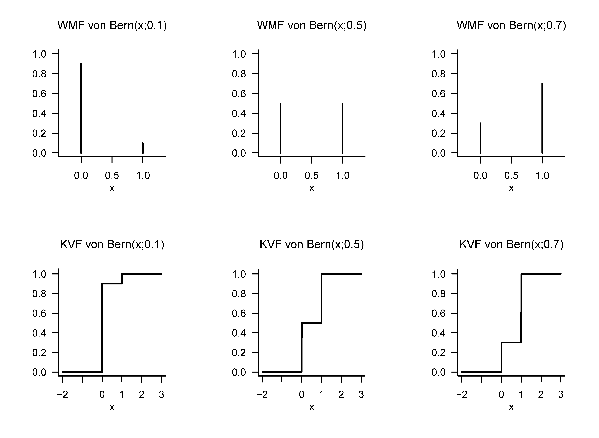
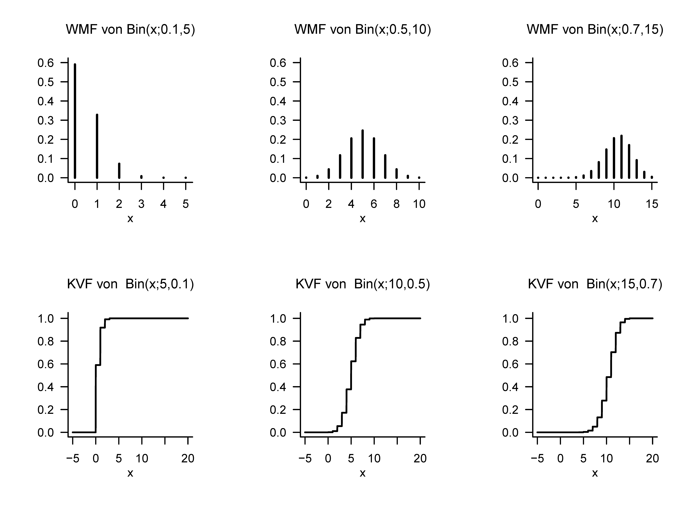
KVFen von kontinuierlichen Zufallsvariablen
Die KVFen von kontinuierlichen Zufallsvariablen sind analytisch etwas zugänglicher als die KVFen von diskreten Zufallsvariablen, da sie keine Unstetigkeitsstellen aufweisen. Wir haben zunächst folgendes, vielleicht etwas überraschendes Theorem.
Theorem 13.5 (Kumulative Verteilungsfunktionen von kontinuierlichen Zufallsvariablen) \(\xi\) sei eine kontinuierliche Zufallsvariable mit WDF \(p\) und KVF \(P\). Dann gilt \[\begin{equation} P(x) = \int_{-\infty}^x p(s)\,ds \mbox{ und } p(x) = P'(x). \end{equation}\]
Beweis. Wir halten zunächst fest, dass weil \(\mathbb{P}(\xi = x) = 0\) für alle \(x \in \mathbb{R}\) gilt, die KVF von \(\xi\) keine Sprünge hat, d.h. \(P\) ist stetig. Mit der Definitionen von WDF und KVF, folgt, dass \(P\) die Form einer Stammfunktion von \(p\) hat. Dass \(p\) die Ableitung von \(P\) ist folgt dann direkt aus dem ersten Hauptsatz der Differential- und Integralrechnung, Theorem 7.3.
Für kontinuierliche Zufallsvariablen gilt also, dass die KVF der Zufallsvariable eine Stammfunktion der entsprechenden WDF ist, und umgekehrt, dass die WDF die Ableitung der KVF ist. Im Kontext des Theorem von Radon-Nikodym wird diese Einsicht auf generelle Maße generalisiert (vgl. Schmidt (2009)). KVFen kontinuierlicher Zufallsvariablen werden auch oft als kumulative Dichtefunktionen (KDFen) bezeichnet.
Als Beispiel betrachten wir die KVF einer normalverteilten Zufallsvariable. Es sei \(\xi \sim N(\mu,\sigma^2)\). Dann ist die WDF von \(\xi\) bekanntlich durch \[\begin{equation} p : \mathbb{R} \to \mathbb{R}_{>0}, x \mapsto p(x) := \frac{1}{\sqrt{2\pi\sigma^2}}\exp\left(-\frac{1}{2\sigma^2}(x-\mu)^2\right). \end{equation}\] gegeben. Für die KVF von \(\xi\) folgt entsprechend, dass \[\begin{equation} P : \mathbb{R} \to ]0,1[, x \mapsto P(x) = \frac{1}{\sqrt{2\pi\sigma^2}}\int_{-\infty}^x\exp\left(-\frac{1}{2\sigma^2}(s -\mu)^2\right)\,ds. \end{equation}\] Interessanterweise kann das definierende Integral der KVF einer normalverteilten Zufallsvariable nur numerisch, nicht aber analytisch berechnet werden. Wir visualisieren ausgewählte WDFen und KVFen von normalverteilten Zufallsvariablen in Abbildung 13.12.
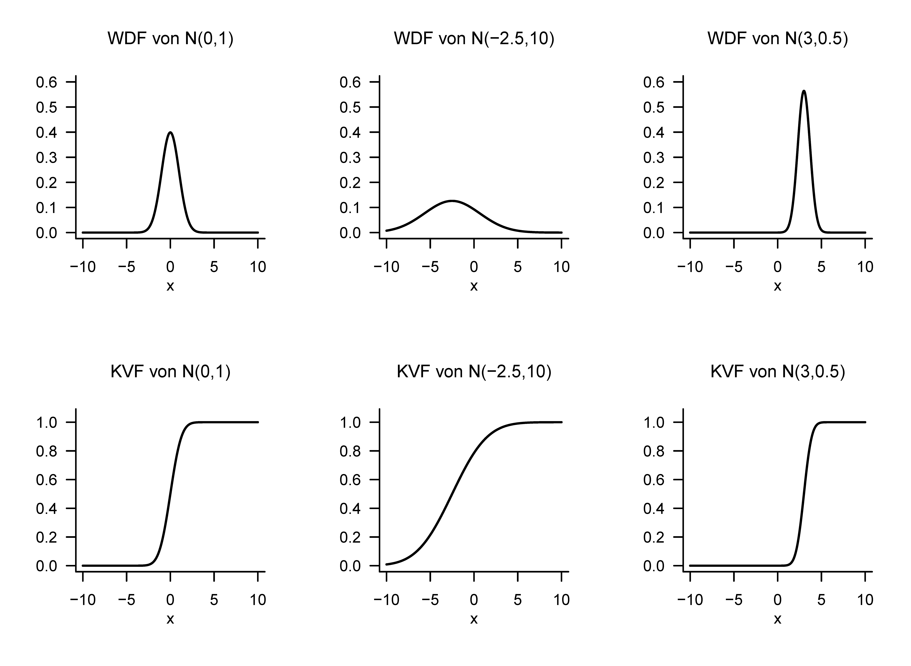
Inverse Kumulative Verteilungsfunktion
Wir beschließen dieses Kapitel mit dem Begriff der inversen kumulativen Verteilungsfunktion, einem technischen Hilfsmittel, dass insbesondere bei Konfidenzintervallen und Hypothesentests der Frequentistischen Inferenz zur Bestimmung kritischer Werte benutzt wird. Wir definieren die inverse KVF wie folgt.
Definition 13.14 (Inverse Kumulative Verteilungsfunktion) \(\xi\) sei eine kontinuierliche Zufallsvariable mit KVF \(P\). Dann heißt die Funktion \[\begin{equation} P^{-1} : ]0,1[ \to \mathbb{R}, q \mapsto P^{-1}(q) := \{x \in \mathbb{R}|P(x) = q\} \end{equation}\] die .
Nach Definition 13.14 gilt offenbar, dass die Funktion \(P^{-1}\) die Umkehrfunktion von \(P\) ist, also \[\begin{equation} P^{-1}(P(x)) = x. \end{equation}\] Da bekanntlich gilt, dass \[\begin{equation} P(x) = q \Leftrightarrow \mathbb{P}(\xi \le x) = q \mbox{ für } q \in ]0,1[, \end{equation}\] ist \(P^{-1}(q)\) also der Wert \(x\) von \(\xi\), so dass \(\mathbb{P}(\xi \le x) = q\). Wir visualisieren die KVFen und inversen KVFen normalverteilter Zufallsvariablen in Abbildung 13.13. Im Falle einer normalverteilten Zufallsvariable \(\xi \sim N(0,1)\) gilt zum Beispiel, dass \[\begin{equation} P(1.645) = 0.950 \Leftrightarrow P^{-1}(0.950) = 1.645, \end{equation}\] und \[\begin{equation} P(1.906) = 0.975 \Leftrightarrow P^{-1}(0.975) = 1.960. \end{equation}\]
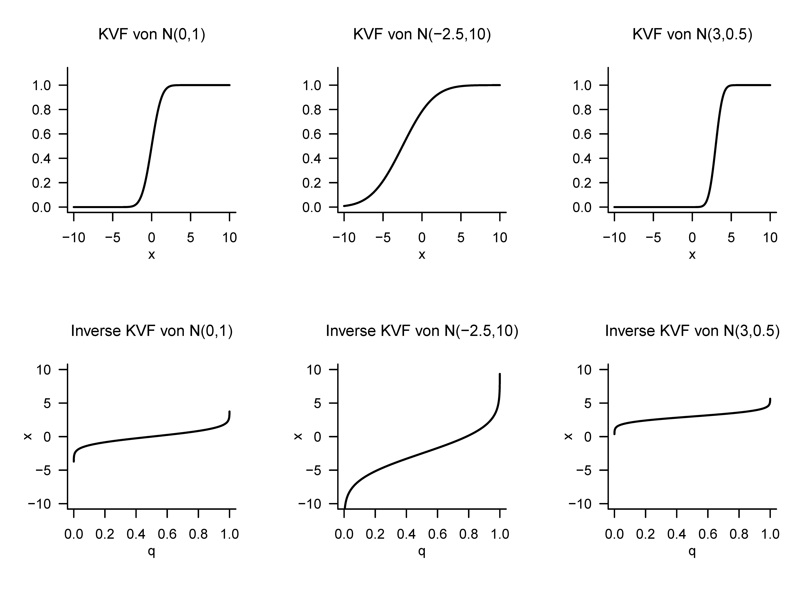
13.5 Zufallsergebnisse und Zufallsvariablen
Mit den in Kapitel 11 diskutierten Ergebnissen und den in diesem Kapitel diskutierten Werten von Zufallsvariablen haben wir nun zwei Konzepte kennengelernt, die die Unsicherheit über einen oft numerischen Wert eines Zufallsvorgangs beschreiben können. So kann man sich zum Beispiel die Augenzahl, die ein Würfel beim einmaligen Werfen annimmt, als Realisierung eines Ergebnisses oder einer Zufallsvariable vorstellen. Tatsächlich gibt es auch keine standardisierte Antwort auf die Frage, ob man einen Zufallsvorgang nun lediglich mit einem Wahrscheinlichkeitsraum oder aber mit einem Wahrscheinlichkeitsraum, einer Zufallsvariable, und dem durch beide induzierten Wahrscheinlichkeitsraum modellieren sollte. In der Anwendung wird meist der Begriff der Zufallsvariable bevorzugt und entsprechende WMFen oder WDFen angegeben, ohne dass ein zugrundeliegender Wahrscheinlichkeitsraum oder die Abbildungsform der Zufallsvariable spezifiziert würde. Folgende Formulierung ist beispielsweise typisch:
\(\xi\) sei eine normalverteilte Zufallsvariable mit Erwartungswertparameter \(\mu\) und Varianzparameter \(\sigma^2\).
Implizit werden in dieser Aussage basierend auf der Definition der normalverteilten Zufallsvariable (vgl. Definition 13.9) für \(\xi\) der Ergebnisraum \(\mathcal{X} := \mathbb{R}\), die \(\sigma\)-Algebra \(\mathcal{S} := \mathcal{B}(\mathbb{R})\), und die Verteilung \(\mathbb{P}_\xi := N(\mu,\sigma^2)\) festgelegt, also der “induzierte” Wahrscheinlichkeitsraum \(\left(\mathbb{R},\mathcal{B}(\mathbb{R}), N(\mu,\sigma^2)\right)\) betrachtet. Allerdings bleibt unklar, durch welchen Wahrscheinlichkeitsraum und welche Abbildungsform genau \(\left(\mathbb{R},\mathcal{B}(\mathbb{R}), N(\mu,\sigma^2)\right)\) nun induziert wurde. Dies kann allerdings immer durch die Annahme, dass \(\xi\) die Identitätsfunktion ergänzt werden. Konkret könnte man für den zugrundeliegenden Wahrscheinlichkeitsraum hier \(\left(\mathbb{R},\mathcal{B}(\mathbb{R}), N(\mu,\sigma^2)\right)\) und für \(\xi\) dann \[\begin{equation} \xi : \mathbb{R} \to \mathbb{R}, \omega \mapsto \xi(\omega) := \omega := x \end{equation}\] wählen. Da \(\xi\) dann an dem im Rahmen des zugrundeliegenden Wahrscheinlichkeitsraum zufällig realisiertem Ergebnis \(\omega\) nichts ändert und dieses lediglich in \(x\) umbenannt wird, entspricht die Verteilung von \(\xi\) dann direkt dem Wahrscheinlichkeitsmaß des zugrundeliegenden Wahrscheinlichkeitsraums.
Allgemein mag man festhalten, dass das Modellieren von Zufallsvorgängen mithilfe von Zufallsvariablen das elementare Wahrscheinlichkeitsraummodell also als Spezialfall der Zufallsvariable als Identititätsabbildung impliziert, über dies hinausgehend aber die Möglichkeit eröffnet, durch von der Identitätsabbildung verschiedene Zufallsvariablen die Transformation von Wahrscheinlichkeitsmaßen auf unterschiedlichen Messräumen zu formalisieren.
13.6 Literaturhinweise
Die Genese des Begriffs der Zufallsvariablen ist eng mit der Entwicklung der Wahrscheinlichkeitstheorie in den letzten drei Jahrhunderten verflochten, so dass keine für den Begriff entscheidene Publikation angegeben werden kann. Die mathematischen Entwicklung des Begriffs der Normalverteilung durch Abraham De Moivre (1667-1754), Pierre Simon Laplace (1749-1827), Johann Carl Friedrich Gauss (1777-1855) und viele andere, ihre deskriptiv-statistischen Entsprechungen in der empirischen Forschung des 19. Jahrhunderts, sowie ihre multivariate Generalisierung im ausgehenden 19. Jahrhundert werden ausführlich in Stigler (1986) dargestellt.
13.7 Selbstkontrollfragen
- Geben Sie die Definition des Begriffs der Zufallsvariable wieder.
- Erläutern Sie die Gleichung \(\mathbb{P}_\xi(\xi = x) = \mathbb{P}(\{\xi = x\})\).
- Erläutern Sie die Bedeutung von \(\mathbb{P}(\xi = x)\).
- Geben Sie die Definition des Begriffs der Wahrscheinlichkeitsmassefunktion wieder.
- Geben Sie die Definition des Begriffs der Wahrscheinlichkeitsdichtefunktion wieder.
- Geben Sie die Definition des Begriffs der kumulativen Verteilungsfunktion wieder.
- Schreiben sie die Intervallwahrscheinlichkeit einer Zufallsvariable mithilfer ihrer KVF.
- Geben Sie die Definition der WDF einer normalverteilten Zufallsvariable wieder.
- Geben Sie die Definition der KVF einer normalverteilten Zufallsvariable wieder.
- Schreiben Sie den Wert \(P(x)\) der KVF einer Zufallsvariable mithilfe ihrer WDF.
- Schreiben Sie den Wert \(p(x)\) der WDF einer Zufallsvariable mithilfe ihrer KVF.
- Geben Sie die Definition des Begriffs der inversen Verteilungsfunktion wieder.
Hesse, C. (2009). Wahrscheinlichkeitstheorie (2. Aufl.). Vieweg + Teubner.
Schmidt, K. D. (2009). Maß und Wahrscheinlichkeit. Springer.
Stigler, S. M. (1986). The History of Statistics: The Measurement of Uncertainty before 1900. Belknap Press of Harvard University Press.